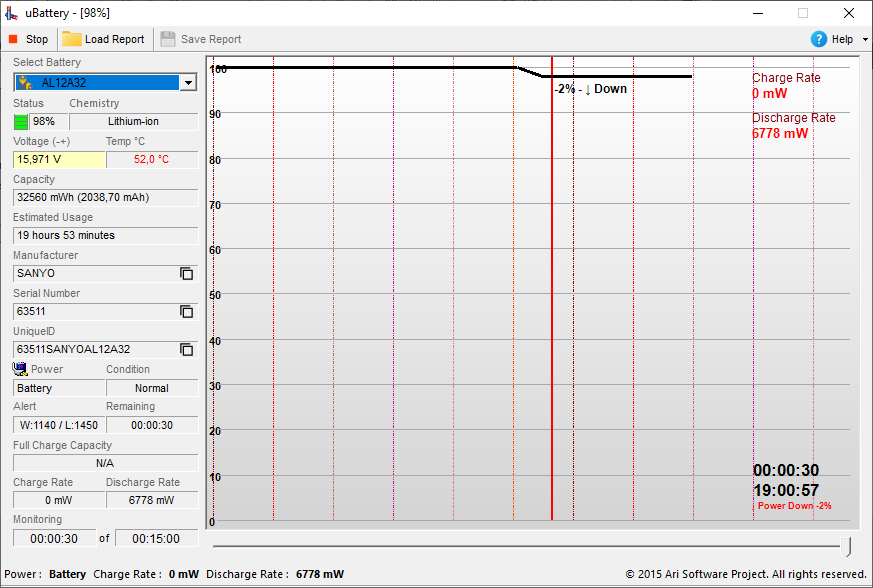

uBattery Documentation
Released: 08/25/2015
Modified: 01/20/2025
Author: Ari Sohandri Putra
© 2015 Ari Software Project.
Introduction
uBattery is a real-time battery monitoring tool designed to provide key insights into your device’s battery performance. It features a dynamic graph that displays battery levels from 0% to 100% and offers comprehensive information about your battery’s capacity, charge and discharge rates, full charge capacity, usage time, and overall status.

Understanding the Display
B. [Charge Rate] - ChargeRate indicates the rate at which the battery receives electrical energy when charged. Usually measured in units of mW (milliwatt).
Ex. Positive Value: Indicates that energy is being input into the battery (battery is charging).
Zero Value: Indicates that no charging is occurring.
Negative Value (rare): May indicate an error or reverse charging (abnormal).
Factors Affecting ChargeRate:
- Charger Capacity: The greater the charger output power (e.g., 18W vs. 5W), the higher the ChargeRate.
- Battery Condition: Old or damaged batteries may charge more slowly.
- Temperature: Charging may slow down if the battery is too hot.
- Charging Rate: ChargeRate is usually higher when battery capacity is low, and slows down when approaching 100% to protect the battery.
- Quick Charge Technology: Enables higher ChargeRate by using specific protocols (e.g., QC, PD, VOOC).
Example Values: 500 mW: The battery is being charged with 500 milliwatts of power.
C. [Discharge Rate] - DischargeRate indicates the speed at which the battery releases energy for use by the device. This is usually measured in mW (milliwatt).
Ex. Positive Value: Indicates that energy is being removed from the battery (normal during use).
Zero Value: Indicates that no energy is being released (for example, the device is connected to external power).
Negative Value (rare): Indicates an error in the calculation.
Factors Affecting DischargeRate:
- Device Load: Power usage increases with device workload (e.g., gaming vs. idle).
- Active Components: A bright screen, hard-working processor, or intensive network usage may increase the DischargeRate.
- Battery Condition: Older batteries may exhibit a higher DischargeRate due to decreased efficiency.
- Energy Saving Mode: Reduces DischargeRate by lowering device performance.
- Ambient Temperature: Extreme temperatures (too hot/cold) may affect battery efficiency.
Example Values: 1000 mW: The battery outputs 1000 milliwatts of power.
D. [Voltage] - Voltage is the nominal or standard voltage that the battery has been designed for by the manufacturer. This voltage reflects the value that the battery should produce when working under optimal conditions.
E. [Chemistry] - Chemistry in battery data refers to the type of chemistry or composition of the materials used in the battery. Each type of battery chemistry has unique characteristics that affect the battery's capacity, voltage, lifespan, and performance.
F. [Temperature] - Shows the temperature value of your battery in Celsius.
G. [Capacity] - Capacity is the maximum capacity designed for the battery by the manufacturer. This value indicates how much power (energy) the battery can store at its first full state after production.
H. [Estimated Usage] - Provides an estimate of the time in seconds that the device can last using the remaining battery power. This value is calculated based on the remaining battery capacity, the energy usage level of the device, and the state of the battery (for example, whether the battery is in the charging process or in the discharge state).
I. [Manufacturer] - Manufacturer refers to the name or identity of the factory or company that produced the battery. Usually, this information is obtained from the hardware data provided by the operating system or the device itself.
J. [Serial Number] - Serial Number is a unique code assigned by the manufacturer to each battery unit. It is the identifier used to distinguish one battery from another. Each battery produced by a particular manufacturer has a different serial number.
K. [UniqueID] - UniqueID is a more specific unique code used to identify a specific device or component, including batteries, in a system.
L. [Power] - Power indicates whether the battery power source is connected to A/C Power or not.
M. [Condition] - Displays battery condition information whether normal or otherwise.
N. [Alert] - “L” means early warning or Low, and “W” means warning for critical battery conditions.
N. [Remaining] - Remaining time is the time that shows the movement of the battery indicator since the monitoring process was first started.
O. [Full Charge Capacity] - FullChargeCapacity refers to the full capacity of the battery when fully charged, which is usually measured in milliampere-hours (mAh) or watt-hours (Wh). This value indicates how much energy the battery can store when fully charged. In other words, it is the amount of energy that the battery can store at its peak capacity.
Additional Information
The uBattery tool not only offers real-time monitoring but also allows users to export data for further analysis. The reports generated can be saved in binary format, making it easy to keep records or share data with other tools. The battery condition alert system provides timely warnings, ensuring that users can take action before the battery reaches a critical state.
By using uBattery, users can make informed decisions about battery care, optimize charging cycles, and extend the lifespan of their device's battery. This tool is particularly useful for laptops, mobile devices, and other portable electronics that rely on rechargeable batteries.